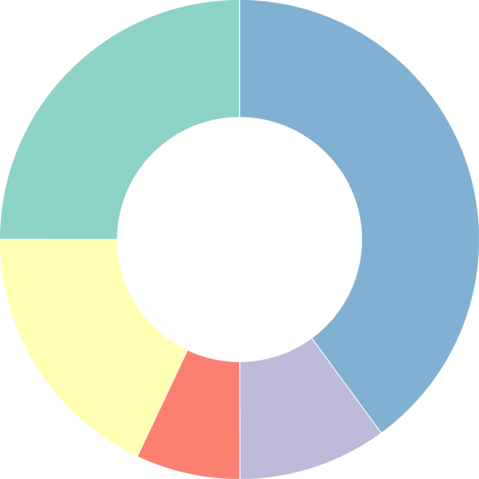
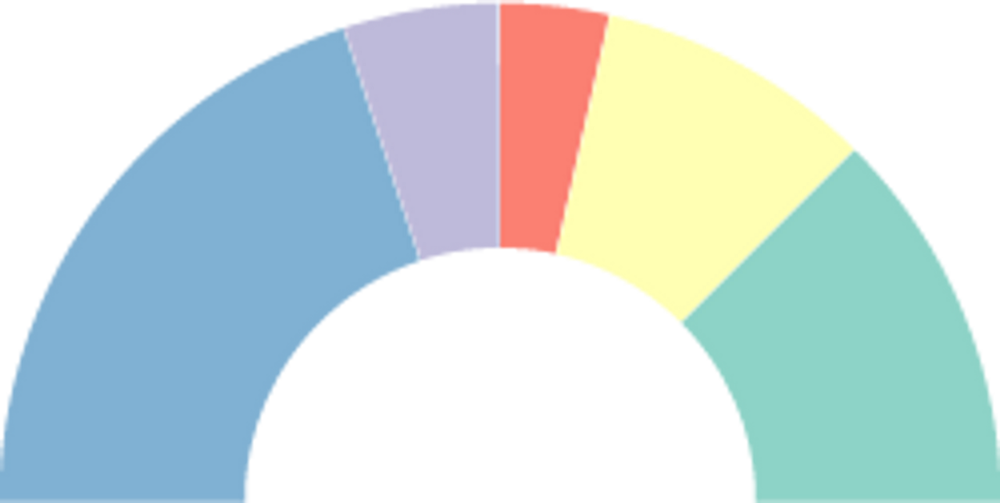
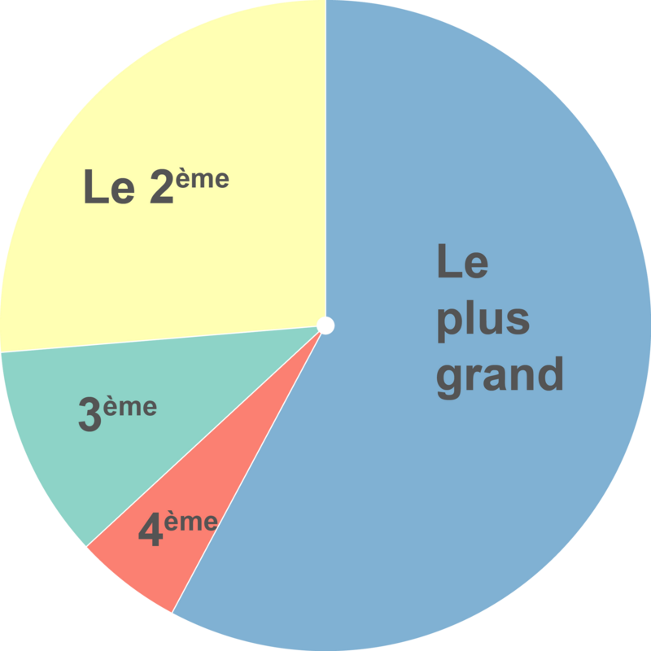
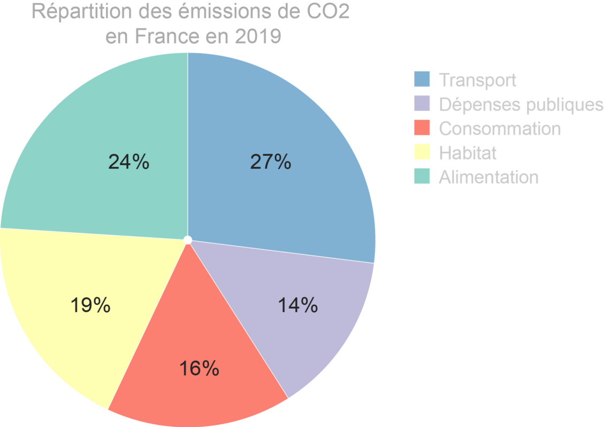
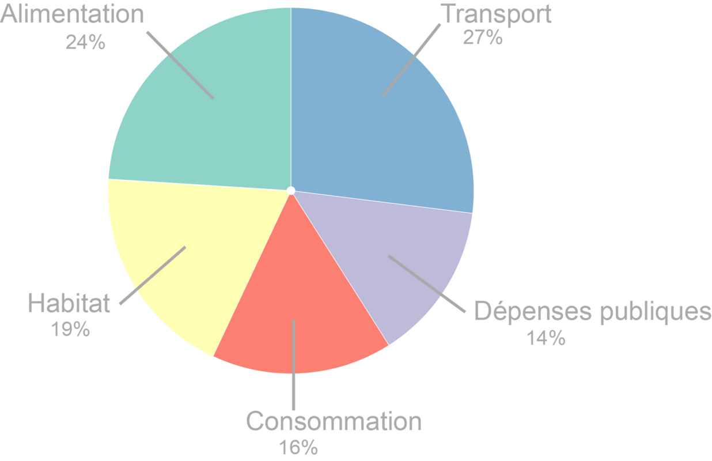

Historique
Les premiers camemberts sont apparus dans “The Statistical Breviary”, écrit par William Playfair en 1801 afin d’illustrer différentes statistiques sur les empires du 19ᵉ siècle.
Diagramme à secteurs de William Playfair
Diagrammes circulaires publiés par William Playfair dans The Statistical Breviary (1801).

![Les cercles représentent la superficie de chaque pays. Les lignes à gauche de chaque cercle représentent la population (en millions d'habitants) et les lignes à droite représentent le total des taxes collectées (en millions de livres sterling). La ligne pointillée met en relation la ligne des revenus et la ligne des taxes. Sa pente est sans interprétation, mais le signe de la pente en a une. Le graphique montre qu'en Grande-Bretagne, le total des taxes comparé à la population est plus élevé que dans les autres pays.](images/96b95218-22a5-46ec-85a0-ee624a621b3e_Untitled.png)
- Timeline de l’histoire de la dataviz
Pourquoi les diagrammes sectoriels
Les diagrammes sectoriels ont bien des limitations et pourtant, malgré les alternatives possibles, ils restent toujours très largement (mal) utilisés.
La principale raison de l’utiliser

- Comparer des valeurs entre plusieurs catégories.
- Représenter les parties d’un tout
- C’est un graphique que tout le monde sait lire.
- Il est bien adapté pour présenter des portions (secteurs) d’un tout (cercle - la somme des secteurs = 100 %)
- à la condition de ne pas dépasser 4 à 5 secteurs.
La principale raison de ne pas l’utiliser
- Différentier les tailles des secteurs est difficile ⇒ Utiliser plutôt des graphiques à barres verticales ou horizontales.

- Ou utiliser un graphique en pente (slopegraph)

Le diagramme sectoriel et ses variantes
Camembert (Pie chart)

En anneau (Donut chart)

Avantage
- possibilité de mettre un titre, un autre graphique, une image ou un commentaire dans la partie centrale
Hémicycle (Arc)

Avantage
- Très utilisé pour représenter la répartition de sièges d’une assemblée, des résultats de sondages …
Combiné (combined pie chart)

Avantage
- La superposition de 2 diagrammes permet de comparer plus facilement deux diagrammes (peu utilisé)
Recommandations
Les données
- Des catégories (pas plus de 4 à 5 catégories - pensez à regrouper toutes les autres catégories).
- Des nombres positifs.
- Pas de zéro ou de minuscules valeurs.
- Le total fait 100 %.
Recommandation 1
- Respecter l’ordre des secteurs

Recommandation 2
- Pas de légendes sur le côté - c’est difficile à lire !

- Utilisez cette alternative si les légendes ne peuvent pas être placées dans les secteurs.

Recommandation 3
- Pas de 3D - Le secteur mis à l’avant est perçu plus grand et cela trompe la perception du lecteur
.png)
Recommandation 4
- Les couleurs ne sont pas toujours nécessaires. Les utiliser avec prudence parce qu’elles véhiculent des symboles.

- Colorer un secteur (et le décaler éventuellement) pour mettre en avant une information à retenir.

Testez par vous-même
Outils
Sélection d’outils
Nous vous proposons des graphiques, des variantes et des lignes directrices, mais peut-on les mettre en œuvre concrètement avec les outils graphiques ?
La liste des logiciels de visualisation de données est longue et en faire une analyse exhaustive serait fastidieuse et pratiquement peu pratique à utiliser. Nous avons choisi quelques outils connus, facile d’accès pour des débutants et qui permettent d’exporter les graphiques dans un format vectoriel .svg (sauf pour l’outil Tableau Software).
Dans ce format, les graphiques se composent d’un ensemble d’objets graphique (polygones, lignes, cercles et textes) qu’il est possible d’importer dans des outils de présentation tels que PowerPoint, Draw ou des outils vectoriels dédiés comme Illustrator ou son équivalent libre Inkscape. Il est alors possible de faire manuellement des modifications qui ne sont pas ou difficilement réalisables avec l’outil de dataviz.
Exemples
- Pour télécharger les fichiers, se placer sur la ligne où s’affiche le nom du fichier puis cliquez sur les 3 points qui apparaissent sur la droite et enfin, cliquez sur télécharger.
- Les exemples qui sont proposés présentent des réalisations basiques. Pensez à sélectionner l’onglet correspondant au graphique.
EXCEL
En savoir +
- Tous les types de diagrammes à secteurs sont réalisables (n’hésitez pas à regarder des tutoriels pour les construire si besoin).
- Pour transférer un graphique au format .svg, sélectionnez le graphique dans l’onglet puis faire un copier-coller vers l’outil de dessins vectoriels ou de présentation.
GOOGLE SHEET (on line)
En savoir +
- Tous les types de diagrammes à secteurs sont réalisables (n’hésitez pas à regarder des tutoriels pour les construire si besoin).
- Pour transférer un graphique au format .svg, sélectionnez le graphique dans l’onglet puis en haut à droite du graphique, cliquez sur l’icone puis télécharger au format .svg.

TABLEAU SOFTWARE
Le site Tableau public propose de nombreux exemples de réalisation
En savoir +
- Sur la page utilisez l’outil recherche en haut à droite et saisissez un mot clé (bar) pour trouver de nombreux exemples téléchargeables.
- L’outil Tableau ne propose pas d’exportation au format .svg mais au format .pdf. Dans ce format, avec les outils vectoriels, l’extraction des formes du graphique reste possible mais difficile.

CALC OpenOffice
En savoir +
- Tous les types de diagrammes à secteurs sont réalisables (n’hésitez pas à regarder des tutoriels pour les construire si besoin).
- Pour transférer un graphique au format .svg, sélectionnez le graphique dans l’onglet puis faire un copier-coller vers l’outil de dessins vectoriels ou de présentation.
RAWgraph (on line)
Après avoir téléchargé le fichier, cliquez sur l’URL du site RAWgraph, puis sur “use it now!” puis sur “Open your project” et charger le fichier viz.rawgraphs préalablement téléchargé. L’outil RAWgraph ne demande pas de prérequis pour être utilisé.
En savoir +
- Cet outil en ligne simple ne permet pas de réaliser tous les types de diagrammes à secteurs.
- Sa simplicité d’utilisation et sa fonction d’exportation au format .svg le place comme une possible alternative à des outils plus complexes comme les tableurs.
Les langages de programmation
Sachez enfin, qu’avec les librairies graphiques associées aux langages de programmation R, Python ou JavaScript, il est possible de réaliser tous les graphiques et les recommandations.
Liens vers le code de graphiques basiques :
JavaScript Observablehq (1)
R (R Graph Gallery)(2),
Python (Python Graph Gallery)(2),
JavaScript d3.js (d3.js Graph Gallery)(2) .
(1) Notebooks observablehq de l’association TDV
(2) Site de Yan Holtz (en anglais) et
Le site The Data Visualization Catalogue propose aussi des exemples réalisés avec de multiples outils ou langages de programmation (en anglais).